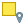

5 Запросы
Для выполнения заданий из раздела “Запросы” загрузите файлы по ссылке 1 или ссылке 2 и создайте новый проект:
- Создайте новую папку проекта под названием “Раздел 5” а так же новый проект в QGIS;
- Загрузите файлы в QGIS;
- Задайте систему координат проекта EPSG:32646;
- Сохраните файл проекта в папку проекта.
Распространенной задачей в геоинформационных системах является поиск объектов по характеристикам (атрибутам) и пространственному положению. Для решения этой задачи используются логические выражения (предикаты) которые отделают искомые объекты от всех остальных по заданному условию. Аналогичные выражения уже использовались в ?sec-rules. Инструменты поиска объектов размещены в “Панели выбора объектов”  в главном окне программы. Некоторые инструменты панели скрыты во вкладках (Рисунок 5.1).
в главном окне программы. Некоторые инструменты панели скрыты во вкладках (Рисунок 5.1).

Если панель выбора объектов не активна, перейдите в меню “Вид” > “Панели инструментов” и поставьте чек-бокс напротив пункта “Панель выбора объектов”.
5.1 Выбор объектов по значению
Простой способ выбора объектов по атрибутам реализуется при помощи инструмента “Выбрать объекты по значению…” который активируется при помощи горячей клавиши F3 или выбором из “панели выбора объектов”. Рассмотрим возможности инструмента на примере слоя “videla”.
Инструмент “Выбрать объекты по значению…” применяется к тому слою, который выделен в панеле слоев на момент использования инструмента. Сначала выберите в панеле слой, после чего активируйте инструмент “Выбрать объекты по значению…” .
В открывшемся окне представлен список полей слоя для каждого из которых возможно задать определенный фильтр. По умолчанию для всех полей активирован режим “Исключить поле” т.е. поле не участвует в фильтрации. Для текстовых полей дополнительная настройка “Case sensetive” включает чувствительность к регистру (прописные и заглавные буквы будут считаться разными символами). Список доступных логических операций различен для текстовых и числовых полей (Рисунок 5.2, Рисунок 5.3).


Фильтр настраивается путем введения порогового значения в необходимое поле и выбора логической операции (равно, больше, меньше и т.д.). Все объекты удовлетворяющие условию будут выбраны. Фильтрация по нескольким полям объединяется оператором “И” т.е. будут выбраны только те объекты, которые удовлетворяют всем введенным условиям. После задания условия нажмите на иконку “Выбрать объекты” в нижней части окна. В основном окне программы выбранные объекты будут выделены желтым цветом. Фильтр для отбора выделов с преобладающей породой сосна и возрастом более 100 лет приведен на рисунке ниже (Рисунок 5.4).

Все выделенные объекты будут так же подсвечены синим цветом в таблице атрибутов, открыв которую можно убедиться в правильности выполнения запроса. Для примера, выберем все выделы со средним возрастом более 150 лет.
Для того что бы быстро найти выделенные объекты в таблице атрибутов, можно воспользоваться инструментом “Переместить выделенные в начало” , так все выделенные объекты будут отображаться в начале таблицы.
При помощи инструмента “Выбор объектов по значению”, выберите выделы с преобладающей породой береза (поле “el_lesa”), типом леса “ВРТ” (поле “tip_lesa”) и средним возрастом более 80 лет (поле “A_let”). В результате должно быть выбрано 42 выдела.
Выполнив Задание 5.1, объекты будут выделены желтым цветом. Новый запрос заменит результаты предыдущего, однако, выделенные объекты возможно сохранить как отдельный векторный слой, для этого перейдите в пункт меню «Правка» > «Копировать объекты», после чего перейдите снова в пункт «Правка» > «Вставить объекты как» > «Создать векторный слой…». Сохраните новый слой в рабочую папку проекта. Cозданный слой будет содержать только выделенные объекты.
Сохраните выделенные объекты из предыдущего задания как новый векторный слой.
Аналогично составляются другие запросы. Для числовых полей может оказаться полезным условие “Между (включительно)”, задающее диапазон значений, которым должны соответствовать объекты (минимальное и максимальное значение). Например, запрос для выбора выделов со средним возрастом от 60 до 90 лет представлен на рисунке ниже (Рисунок 5.5). Обратите внимание на то, что карйние значения диапазона (т.е. 60 и 90) так же попадают в выборку.

Выберите выделы со средней высотой (поле “H_m”) от min до 15 и от 20 до max. Для этого, по аналогии с условием “Между (включительно)” используйте условие “Вне диапазона (включительно)”. В результате выборка должна составить 351 выдел. Примечение: выделы со средней высотой 15 и 20 м так же должны быть включены в выборку.
Кроме опции “Выбрать объекты” доступны варианты модификации уже созданной выборки, режимы “Добавить к текущей выборке” и “Удалить из текущей выборки” позволяют соответственно добавить объекты к уже существующей выборке или удалить из нее, “Фильтровать текущее выделение” применяет фильтр к ранее выбранным объектам (Рисунок 5.6).

Выберите 20 - 30 случайных выделов, используя инструмент “Выбор объектов” . Отфильтруйте полученную выборку так, что бы остались выделы со средним возрастом более 100 лет (поле “A_let”). Для этого используйте инструмент “Выбрать объекты по значению”, задайте условия фильтра, после чего используйте режим “Фильтровать текущее выделение” (см. Видео 5.1).
5.2 Выбор объектов по выражению
Более гибкие возможности выбора объектов предоставляет инструмент “Выбрать объекты по выражению…” (Рисунок 5.7).
!!! Добавить картинку панели с инструментом!!!

В левой части окна записывается логическое выражение (предикат), в средней части выбираются логические операторы и поля, участвующие в выражении (наиболее часто используемые категории “Операторы” и “Поля и значения”). В правой части окна выводится справка. Иконка “Выбрать объекты” активирует выбор объектов по заданному выражению. Операторы для количественных и качественных переменных различаются. Для запросов к количественным переменным (площадь выдела, средний возраст и т.д.) применяются операторы: равно (=), не равно (<>), больше (>), меньше (<), больше или равно (>=), меньше или равно (<=). Для запросов к качественным переменным (элемент леса, тип леса и т.д.) используют операторы IS, IS NOT, IN.
Например:
- выражение для выбора выделов с площадью более 5 га:
"s_ha" > 5; - выражение для выбора выделов с типом леса “ВКТ”:
"tip_lesa" IS 'БРТ'; - выражение для выбора выделов где преобладающая порода НЕ сосна:
"el_lesa" IS NOT 'С'.
В конструкторе выражений названия полей записываются в двойных кавычках ("s_ga"), текст в одинарных ('БРТ'), числа записывают без кавычек.
Поисковые запросы чувствительны к регистру и языку ввода. Часто к ошибкам приводит запись буквы 'С' латиницей (внешне она не отличима от кириллицы), поэтому при поиске сосны в поле “el_lesa” порода записывается кириллицей с заглавной буквы - 'С'.
При помощи инструмента “Выбрать объекты по выражению” выберите выдела первой группы возраста (поле “gr_vozr”). В таблице атрибутов выдела первой группы возраста (молодняки) имеют значение 1 в соответствующем поле. В результате запроса должно быть выбрано 9 выделов.
Пропущенные значения кодируются значением NULL. При поиске пропущенных значений в качестве оператора используется IS вместо знака равенства. Например, для поиска выделов с пропущенным средним возрастом, следует использовать выражение: "A_let" IS NULL.
При помощи инструмента “Выбрать объекты по выражению…” выберите выделы в которых пропущен запас на 1 га (поле “zapas_1_ha”). В результате должно быть выбрано 74 выдела.
Отдельная группа операторов позволяет объединить несколько условий в одно выражение, соединяя их одним из операторов: И (AND); ИЛИ (OR). Отдельно стоит рассмотреть оператор NOT, который меняет результат любого оператора на противоположный. Все перечисленные операторы могут принимать только два значения: правда или ложь. Если для конкретного объекта всё выражение принимает значение правда — этот объект соответствует условиям и попадает в выборку.
Для выбора выделов со средним возрастом от 50 до 70 лет конструируется следующее выражение: "A_let" > 50 AND "A_let" < 70. В этом случае было записано два условия соединенных через оператор AND (И). Такое выражение выбирает объекты, которые соответствуют И первому И второму условию.
При помощи инструмента “Выбрать объекты по выражению…” выберите выделы со средним диаметром больше 40 см (поле “DBH_cm”) И преобладающей породой сосна. В результате должен быть выбран 21 выдел.
Для объединения нескольких условий так же применяется оператор ИЛИ (OR) который используется когда объект должен удовлетворять хотя бы одному условию. Например, для выбора выделов со средней высотой более 30 м ИЛИ возрастом более 100 лет используется выражение: "H_m" > 30 OR "A_let" > 100. В результате будут выбраны выдела со средней высотой более 30 м или с возрастом более 100 лет.
При помощи инструмента “Выбрать объекты по выражению…” выберите выделы с преобладающей породой осина ИЛИ выделы старше 140 лет. В результате должно быть выбрано 38 выделов.
Для выбора нескольких значений качественной переменной используется оператор IN после которого в круглых скобках указывается список значений. Если значение атрибута объекта соответствует хотя бы одному значению из списка - он попадает в выборку. Выбор выделов с типами леса ВКТ, ЗМ, КТП производится выражением: "tip_lesa" IN ('ВКТ', 'ЗМ', 'КТП').
При помощи инструмента “Выбрать объекты по выражению…” выберите выделы с преобладающей породой береза, осина, липа (используйте оператор IN) и возрастом более 60 лет (т.е. средний возраст каждого выдела должен быть больше 60 лет). В результате должно быть выбрано 137 выделов.
5.3 Выбор объектов по пространственному положению
Выбор объектов по пространственному положению производится инструментом “Выбрать по расположению”  который позволяет выбрать объекты одного слоя по пространственным отношениям к объектам другого слоя (Рисунок 5.8).

В пункте “Выбрать объекты слоя” назначается слой из которого выбираются объекты по условию пространственного отношения с другим слоем, которое задается в пункте “по отношению к объектам слоя”. Необходимые пространственные отношения отмечаются чек-боксами в пункте “Где объект (геометрический предикат)”. Пункт “Изменить текущую выборку” позволяет “создать новую выборку” или модифицировать уже выбранные объекты (см Рисунок 5.9).
Используя инструмент “Выбрать по расположению”, выберите только те выделы, которые пересекаются реками (слой “rivers”). Сохраните выбранные выделы как отдельный слой. В результате должно быть выбрано 64 выдела (см. Видео 5.2)
Для просмотра количества выбранных выделов откройте таблицу атрибутов. Выбранные выделы будут подсвечены синим цветом. Для более удобного подсчета используйте инструмент “Переместить выделенные в начало” .
Пункт “Изменить текущую выборку” позволяет “создать новую выборку” (по умолчанию) или модифицировать уже существующую: “добавить к текущей выборке”, “выбрать в текущей выборке”, “удалить из текущей выборки”. Последние 3 пункта позволяют объединить несколько пространственных запросов или комбинировать пространственный запрос с выбором по атрибутам (Рисунок 5.9).

Выберите выделы которые пересекаются реками и дорогами. Для этого объедините два пространственных запроса (пересечение с реками и пересечение с дорогами). В результате должен быть выбран 151 выдел. Сохраните выбранные выделы как новый векторный слой.
Выберите выделы которые пересекаются реками и преобладающая порода в которых НЕ сосна. Для этого объедините пространственный запрос с запросом по атрибутам. В результате должно быть выбрано 19 выделов. Сохраните выбранные объекты как новый векторный слой.